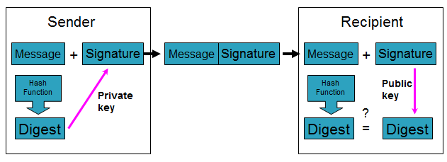

8. การพิสูจน์ทราบตัวตน
การพิสูจน์ตัวตน คือขั้นตอนการยืนยันความถูกต้องของหลักฐาน (Identity) ที่แสดงว่าเป็นบุคคลที่กล่าวอ้างจริง ในทางปฏิบัติจะแบ่งออกเป็น 2 ขั้นตอน คือ
- การระบุตัวตน (Identification) คือขั้นตอนที่ผู้ใช้แสดงหลักฐานว่าตนเองคือใครเช่น ชื่อผู้ใช้ (username)
- การพิสูจน์ตัวตน (Authentication) คือขั้นตอนที่ตรวจสอบหลักฐานเพื่อแสดงว่าเป็นบุคคลกล่าวอ้างจริง
หลักฐานที่ผู้ใช้นำมากล่าวอ้างที่เกี่ยวกับเรื่องของความปลอดภัยนั้นสามารถจำแนกได้ 2 ชนิด
- Actual identity คือหลักฐานที่สามารถบ่งบอกได้ว่าในความเป็นจริงบุคคลที่กล่าวอ้างนั้นเป็นใคร
- Electronic identity คือหลักฐานทางอิเล็กทรอนิกส์ซึ่งสามารถบ่งบอกข้อมูลของบุคคลนั้นได้
กลไกของการพิสูจน์ตัวตน (Authentication mechanisms) สามารถแบ่งออกได้เป็น 3 คุณลักษณะคือ
- สิ่งที่คุณมี (Possession factor) เช่น กุญแจหรือเครดิตการ์ด เป็นต้น
- สิ่งที่คุณรู้ (Knowledge factor) เช่น รหัสผ่าน (passwords) หรือการใช้พิน (PINs) เป็นต้น
- สิ่งที่คุณเป็น (Biometric factor) เช่น ลายนิ้วมือ รูปแบบเรตินา (retinal patterns) หรือใช้รูปแบบเสียง (voice patterns) เป็นต้น
ประเภทของการพิสูจน์ตัวตน (Authentication Types)
1.1 การพิสูจน์ตัวตนโดยใช้รหัสผ่าน (Authentication by Passwords)
รหัสผ่านเป็นวิธีการที่ใช้มานานและนิยมใช้กันแพร่หลาย รหัสผ่านควรจำกัดให้เฉพาะผู้ใช้ที่มีสิทธิเท่านั้นที่ทราบ แต่ว่าในปัจจุบันนี้ การใช้แค่รหัสผ่านไม่มีประสิทธิภาพมากพอที่จะรักษาความมั่นคงปลอดภัยให้กับระบบคอมพิวเตอร์หรือระบบเครือข่ายคอมพิวเตอร์ เนื่องจากการตั้งรหัสผ่านที่ง่ายเกินไป และวิทยาการและความรู้ที่ก้าวหน้าทำให้รหัสผ่านอาจจะถูกขโมยโดยระหว่างการสื่อสารผ่านเครือข่ายได้
1.2 การพิสูจน์ตัวตนโดยใช้ PIN (Authentication by PIN)
PIN (Personal Identification Number) เป็นรหัสลับส่วนบุคคลที่ใช้เป็นรหัสผ่านเพื่อเข้าสู่ระบบ ซึ่ง PIN ใช้อย่างแพร่หลายโดยเฉพาะการทำธุรกรรมทางด้านธนาคาร เช่นบัตร ATM และเครดิตการ์ดต่างๆ การใช้ PIN ทำให้มีความปลอดภัยในการสื่อสารข้ามระบบเครือข่ายสาธารณะมากขึ้น เนื่องจาก PIN จะถูกเข้ารหัสเอาไว้และจำเป็นต้องมีเครื่องมือที่สามารถถอดรหัสนี้ออกมาได้ เช่นฮาร์ดแวร์ที่ออกแบบมาโดยเฉพาะ และถูกติดตั้งไว้ในเครื่องของผู้รับและผู้ส่งเท่านั้น
1.3 การพิสูจน์ตัวตนโดยใช้ Password Authenticators หรือ Tokens
Authenticator หรือ Token เป็นฮาร์ดแวร์พิเศษที่ใช้สร้าง "รหัสผ่านซึ่งเปลี่ยนแปลงได้ (dynamic password)" ในขณะที่กำลังเข้าสู่ระบบเครือข่าย มี 2 วิธี คือ ซิงโครนัส และ อะซิงโครนัส
1.3.1 การพิสูจน์ตัวตนแบบซิงโครนัส
1.3.2 การพิสูจน์ตัวตนแบบอะซิงโครนัส
1.3.1 การพิสูจน์ตัวตนแบบซิงโครนัส
แบ่งออกเป็น 2 ประเภทตามลักษณะของการใช้งาน คือ
- การพิสูจน์ตัวตนแบบซิงโครนัสโดยขึ้นอยู่กับสถานการณ์ (Event-synchronous authentication) เมื่อผู้ใช้ต้องการที่จะเข้าสู่ระบบ ผู้ใช้จะต้องกด Token เพื่อให้ Token สร้างรหัสผ่านให้ จากนั้นผู้ใช้นำรหัสผ่านที่แสดงหลังจากกด Token ใส่ลงในฟอร์ม เพื่อเข้าสู่ระบบ ระบบจะทำการตรวจสอบกับเซิร์ฟเวอร์ก่อน ว่ารหัสผ่านที่ใส่มีอยู่ในเซิร์ฟเวอร์จริง จึงจะยินยอมให้ผู้ใช้เข้าสู่ระบบ
- การพิสูจน์ตัวตนแบบซิงโครนัสโดยขึ้นอยู่กับเวลา (Time-synchronous authentication) เป็นวิธีการที่สร้างรหัสผ่านโดยมีการกำหนดช่วงระยะเวลาการใช้งาน โดยปกติแล้วรหัสผ่านจะถูกเปลี่ยนทุกๆ หนึ่งนาที การสร้างรหัสผ่านจะเป็นไปอย่างต่อเนื่อง ทำให้บางครั้งรหัสผ่านที่สร้างออกมาอาจจะซ้ำกันกับรหัสผ่านตัวอื่นที่เคยสร้างมาแล้วก็ได้ เมื่อผู้ใช้ต้องการเข้าสู่ระบบก็ใส่รหัสผ่านและเวลาที่รหัสผ่านตัวนั้นถูกสร้างลงในฟอร์ม เพื่อเข้าสู่ระบบ ระบบจะทำการตรวจสอบเวลาและรหัสผ่านที่ผู้ใช้ใส่ลงไป กับเซิร์ฟเวอร์ว่ารหัสผ่านที่ใส่ตรงกับเวลาที่ Token สร้าง และมีอยู่ในเซิร์ฟเวอร์จริง จึงยินยอมให้ผู้ใช้เข้าสู่ระบบ
1.3.2 การพิสูจน์ตัวตนแบบอะซิงโครนัส
การพิสูจน์ตัวตนแบบอะซิงโครนัส หรือเรียกอีกอย่างหนึ่งว่า "challenge-response" ถูกพัฒนาขึ้น เป็นลำดับแรกๆ ของระบบการใช้ "รหัสผ่านซึ่งเปลี่ยนแปลงได้" ซึ่งถือได้ว่าเป็นการป้องกันการจู่โจมที่ปลอดภัยที่สุด เพราะเนื่องจากว่าเมื่อผู้ใช้ต้องการจะเข้าสู่ระบบ ผู้ใช้จะต้องทำการร้องของไปยังเซิร์ฟเวอร์ จากนั้นเซิร์ฟเวอร์ก็จะส่ง challenge string มาให้ผู้ใช้ เพื่อให้ผู้ใช้ใส่ลงใน Token ที่ผู้ใช้ถืออยู่ จากนั้น Token จะทำการคำนวณรหัสผ่านออกมาให้ผู้ใช้ ผู้ใช้จึงสามารถนำรหัสผ่านนั้นใส่ลงในฟอร์มเพื่อเข้าสู่ระบบได้
1.4 การพิสูจน์ตัวตนโดยใช้ลักษณะเฉพาะทางชีวภาพของแต่ละบุคคล (Authentication by Biometric traits)
ลักษณะทางชีวภาพของแต่ละบุคคลเป็นลักษณะเฉพาะและลอกเลียนแบบกันไม่ได้ การนำมาใช้ในการพิสูจน์ตัวตนจะเพิ่มความน่าเชื่อถือได้มากขึ้นเช่นการใช้ลายนิ้วมือ เสียง ม่านตา เป็นต้น จึงมีการนำเทคโนโลยีนี้มาช่วยในการพิสูจน์ตัวตน เพื่อเพิ่มความปลอดภัยก่อนเข้าสู่ระบบ เช่นการใช้ควบคู่กับการใช้รหัสผ่าน
1.5 การพิสูจน์ตัวตนโดยใช้รหัสผ่านที่ใช้เพียงครั้งเดียว (One-Time Password: OTP)
One-Time Password ถูกพัฒนาขึ้นเพื่อหลีกเลี่ยงปัญหาที่เกิดจากการใช้รหัสผ่านเพียงตัวเดียวซ้ำๆกัน OTP จะทำให้ระบบมีความปลอดภัยมากขึ้น เพราะรหัสผ่านจะถูกเปลี่ยนทุกครั้งก่อนที่ผู้ใช้จะเข้าสู่ระบบ
การทำงานของ OTP คือเมื่อผู้ใช้ต้องการจะเข้าใช้ระบบ ผู้ใช้จะทำการร้องขอไปยังเซิร์ฟเวอร์ จากนั้นเซิร์ฟเวอร์จะส่ง challenge string กลับมาให้ผู้ใช้ จากนั้นผู้ใช้จะนำ challenge string และรหัสลับที่มีอยู่กับตัวของผู้ใช้นำไปเข้าแฮชฟังก์ชันแล้วออกมาเป็นค่า response ผู้ใช้ก็จะส่งค่านั้นกลับไปยังเซิร์ฟเวอร์ เซิร์ฟเวอร์จะทำการตรวจสอบค่าที่ผู้ใช้ส่งมาเปรียบเทียบกับค่าที่เซิร์ฟเวอร์เองคำนวณได้ โดยเซิร์ฟเวอร์ก็ใช้วิธีการคำนวณเดียวกันกับผู้ใช้ เมื่อได้ค่าที่ตรงกันเซิร์ฟเวอร์ก็จะยอมรับให้ผู้ใช้เข้าสู่ระบบ
1.6 การพิสูจน์ตัวตนโดยการเข้ารหัสโดยใช้กุญแจสาธารณะ (Public-key cryptography)
เป็นการรักษาความปลอดภัยของข้อมูลระหว่างการส่งข้ามเครือข่ายวิธีหนึ่งที่นิยมใช้กันอยู่ในปัจจุบัน การเข้ารหัสแบบคู่รหัสกุญแจนี้จะมีความปลอดภัยมากกว่าการเข้ารหัสข้อมูลแบบธรรมดา แต่ก็ไม่ได้หมายความว่าการเข้ารหัสแบบคู่รหัสกุญแจนี้จะเป็นวิธีที่เหมาะสมที่สุดของวิธีการเข้ารหัส ทั้งนี้ขึ้นอยู่กับประเภทงานของแต่ละองค์กรหรือบุคคล
การประยุกต์ใช้ในการพิสูจน์ตัวตน (Authentication) เป็นการนำข้อมูลที่ผู้ส่งต้องการส่งมาเข้ารหัสด้วยกุญแจส่วนตัวของผู้ส่ง แล้วนำข้อมูลนั้นส่งไปยังผู้รับ ซึ่งผู้รับจะใช้กุญแจสาธารณะซึ่งเป็นคู่รหัสกันถอดรหัสออกมา ผู้รับก็สามารถรู้ได้ว่าข้อความนั้นถูกส่งมาจากผู้ส่งคนนั้นจริง ถ้าสามารถถอดรหัสข้อมูลได้อย่างถูกต้อง
1.7 การพิสูจน์ตัวตนโดยการใช้ลายเซ็นอิเล็กทรอนิคส์ (Digital Signature)
การพิสูจน์ตัวตนโดยการใช้ลายเซ็นอิเล็กทรอนิคส์ (Digital Signature) เป็นการนำหลักการของการทำงานของระบบการเข้ารหัสแบบใช้คู่รหัสกุญแจเพื่อการพิสูจน์ตัวตนมาประยุกต์ใช้ ระบบของลายเซ็นดิจิตอลสามารถแบ่งเป็นขั้นตอนได้ดังนี้
1. เมื่อผู้ใช้ต้องการจะส่งข้อมูลไปยังผู้รับ ข้อมูลนั้นจะถูกนำไปเข้าฟังก์ชั่นทางคณิตศาสตร์ที่เรียกว่า "แฮชฟังก์ชัน" ได้เมสเซสไดเจสต์ (Message Digest) ออกมา
2. การใช้กุญแจส่วนตัวเข้ารหัสข้อมูล หมายถึงว่าผู้ส่งได้ลงลายเซ็นดิจิตอล ยินยอมที่จะให้ผู้รับ สามารถทำการตรวจสอบด้วยกุญแจสาธารณะของผู้ส่งเพื่อพิสูจน์ตัวตนของผู้ส่งได้
3. การตรวจสอบข้อมูลว่าถูกส่งมาจากผู้ส่งคนนั้นจริงในด้านผู้รับ โดยการนำข้อมูลมาผ่านแฮชฟังก์ชันเพื่อคำนวณหาค่าเมสเซจไดเจสต์ และถอดรหัสลายเซ็นอิเล็กทรอนิคส์ด้วยกุญแจสาธารณะของผู้ส่ง ถ้าสามารถถอดได้อย่างถูกต้อง จะเป็นการยืนยันข้อมูลจากผู้ส่งคนนั้นจริง และถ้าข้อมูลเมสเซจไดเจสต์ที่ได้จากการถอดรหัสเท่ากันกับค่าเมสเซจไดเจสต์ในตอนต้นที่ทำการคำนวณได้ จะถือว่าข้อมูลดังกล่าวนั้นถูกต้อง
ลายเซ็นอิเล็กทรอนิคส์นิยมนำไปใช้ในระบบรักษาความปลอดภัยในการชำระเงินผ่านระบบอินเตอร์เน็ต ซึ่งในปัจจุบันนี้การทำธุรกรรมการเงินอิเล็กทรอนิกส์ได้รับความนิยมเป็นอย่างมาก
หลักการทำงานของลายเซ็นดิจิตอล

1.8 การพิสูจน์ตัวตนโดยใช้การถาม - ตอบ (zero-knowledge proofs)
การที่จะทำให้ระบบมั่นใจได้ว่า ผู้ที่เข้าไปในระบบผู้นั้นเป็นผู้ที่ได้รับอนุญาตจริง นั่นก็คือ ระบบจะใช้การถาม - ตอบ ซึ่งคำถามและคำตอบเหล่านี้ ผู้ใช้จะเป็นคนสร้างคำถามและคำตอบขึ้นมาเอง จากนั้นจะส่งให้กับเซิร์ฟเวอร์ ซึ่งคำถาม - คำตอบที่ผู้ใช้สร้างขึ้นมา ผู้ใช้เท่านั้นจะเป็นคนที่ทราบคำตอบของแต่ละคำถามที่ถูกสร้าง และเมื่อผู้ใช้คนนั้นๆเข้าสู่ระบบได้ ระบบจะถามสุ่มคำถามเหล่านั้นที่ผู้ใช้คนนั้นๆ สร้างขึ้นมา ถามผู้ใช้คนนั้นๆก่อนที่จะยอมให้เข้าใช้ระบบได้จริง การให้ใช้ระบบได้จริงจะได้รับการยินยอมก็ต่อเมื่อการตอบคำตอบที่ผู้ใช้ตอบนั้นสัมพันธ์กับคำตอบที่มีอยู่ในเซิร์ฟเวอร์